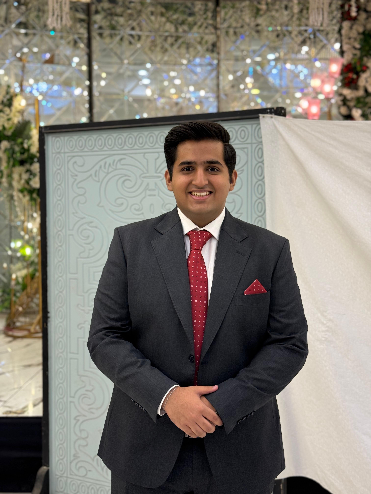

👨💻 About Me

-
🎓 I’m currently pursuing a Bachelor’s degree in Artificial Intelligence at
Ghulam Ishaq Khan Institute of Engineering Sciences and Technology (GIKI). I’m building a strong foundation in computer science, machine learning, and data-driven problem solving—driven by a passion to apply AI to real-world challenges and create intelligent solutions that improve lives.
-
🤖 My core interests lie in machine learning, deep learning, and data science. I love exploring how these technologies can be used for predictive modeling, neural networks, and practical AI applications. Turning ideas into working solutions is what excites me the most.
-
🧠 Technically, I’m proficient in Python, with hands-on experience in Object-Oriented Programming (OOP), data structures, and key libraries like
NumPy, Pandas, Scikit-learn, and Streamlit. I enjoy experimenting with algorithms, training models, and diving deep into data analysis.
-
🌱 Outside the classroom, I invest time in self-learning, online competitions, and collaborative projects. I'm passionate about innovation, teamwork, and continuous growth—and I’m always open to connecting with others who share the vision of using AI for meaningful impact.